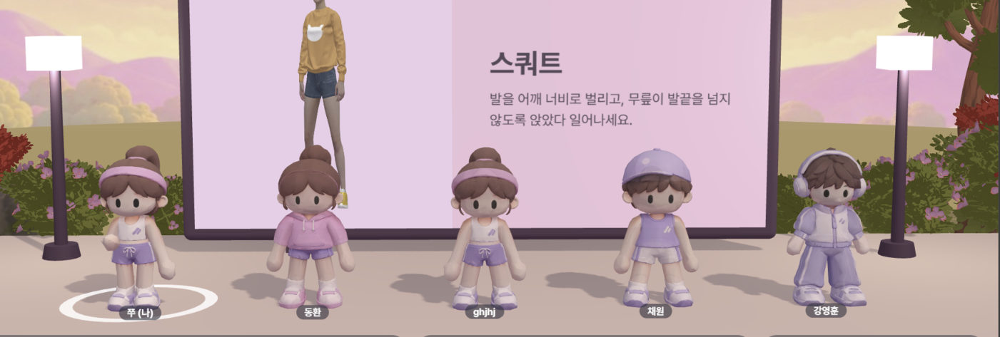
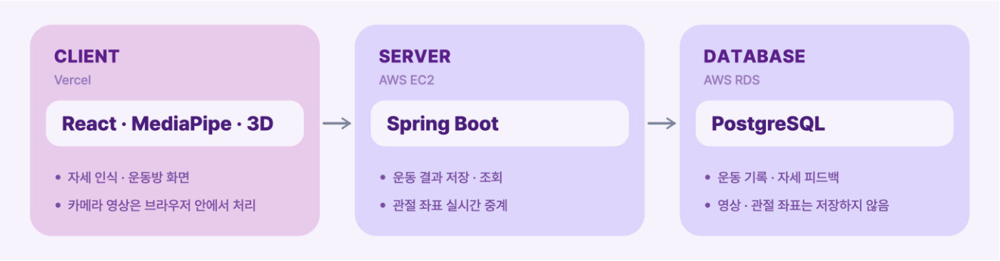

실시간 WebSocket 중계 서버로 2026 멋사 1호선톤 최우수상. 실사용 출결 서비스의 전면 장애(커넥션 풀 고갈)와
운영 환경 시각 오차를 원인까지 내려가 해결했습니다. 이 페이지의 기여 수치는 전부 git 기록에서 직접 센 값이고,
팀원이 만든 기능은 넣지 않았습니다.
최우수상2026 1호선톤
74%졸업작품 서버 코드 본인 작성
29ms20명 동시 중계 p95
288본인 작성 테스트 통과
운영까지 책임지는 서버배포로 끝내지 않고 장애 원인까지 내려가 해결하고, 재발 감지 장치를 남깁니다.
숫자로 정하고 숫자로 남김메시지 크기·빈도 상한, 부하 한계를 직접 측정해 문서로 남기고 그 값으로 설계를 정합니다.
결정을 기록하는 습관되돌리기 어려운 결정은 ADR로, 트러블슈팅은 설정 파일 주석과 커밋에 원인까지 적어 둡니다.
01
Work
가장 깊이 붙잡았던 4건 — 본인이 직접 구현한 부분만


2026 멋쟁이사자처럼 1호선톤 · 8개 대학 연합 · 20팀 · 5인(백엔드 2)
FITMATE — 친구와 같은 방에서 하는 AI 홈트레이닝
최우수상
ROLE
실시간(WebSocket) 담당
PERIOD
2026.11.06 – 11.15
COMMIT · PR
61 / 127 · PR 10건
MY TEST
151건 통과 (전체 330)
문제
다른 PC의 친구와 같은 3D 운동방에서 초당 15번 들어오는 동작 정보를 실시간으로 주고받아야 했습니다. 와이파이가 잠깐 끊겨도 내 운동 기록이 날아가거나, 친구의 연결 문제가 내 진행에 영향을 주면 안 됐습니다.
판단
실시간 서버는 내용을 해석하지 않고 중계만 하고, 운동 기록(DB)은 REST 쪽에서만 쓰도록 경계를 나눴습니다. 끊김은 곧바로 퇴장이 아니라 "불안정" 상태로 자리 유지로 정의했고, 메시지 크기·빈도는 먼저 재 보고 상한을 정했습니다.
20명 · 29.3ms15Hz 동시 중계 p95 · 오류 0건
/
30명 · 86.5%수신율이 꺾이는 지점까지 측정·공유
WebSocket 방 레지스트리 — 입퇴장·상태 공유·하트비트. JOIN 이후엔 클라이언트가 보낸 식별값을 무시하고 연결에 묶인 참가자로만 처리해 사칭 차단. 토큰은 URL이 아닌 첫 메시지로 받음.
메시지 형식을 실측으로 결정 — MediaPipe 결과를 그대로 보내면 9,007B로 Tomcat 기본 한도 8KB를 넘어 서버가 받지 못함을 확인. 배열·소수 3자리 형식(927B)을 제안하고 서버 상한을 2KB·참가자당 초당 15개로 설정값(realtime.pose-max-bytes)으로 분리.
과부하 방어 — 30Hz로 보내도 상한에서 잘려 다른 참가자 지연이 늘지 않음을 측정으로 확인. 응원 연타는 1초 쿨다운, 넘는 메시지는 연결을 끊지 않고 버림.
재접속 일관성 — 끊기기 전 상태만 복원하고, 밀려난 이전 연결의 늦은 메시지는 전달하지 않음. "친구 상태가 내 진행을 바꾸지 않는다"는 규칙을 테스트 10건으로 고정.
측정으로 한계 공개 — Node 부하 스크립트로 인원별 지연·수신율 실측(로컬 PC 1대). 동작 정보가 인원 제곱으로 늘어 30명부터 밀린다는 결과와 함께, 측정 클라이언트 병목 가능성·배포 환경 미측정을 문서에 그대로 적음.
운영 API — 시연 운영 화면용 API와 운영 키 인증(키 미설정 시 전체 차단). 챌린지 동시 입장·시작은 단일 서버 공정 잠금으로 직렬화하고 동시성 테스트로 확인.
홈 화면의 '나의 학습 현황'과 학습 목록·상세는 본인 API. 통계·출석부·게임 화면은 팀원 담당이라 싣지 않음.
졸업작품 · 백엔드 2인
한국어 발음 교정 학습 서비스
백엔드 주담당
ROLE
백엔드 주담당
PERIOD
2026.06 – 2026.08
COMMIT
208 / 243
MY SHARE
API 23 / 34 · 코드 74%
문제
발음 분석은 외부 AI 서버에 의존했고, 소셜 로그인 제공자와 파일 저장소는 프로젝트 도중에 바뀔 수 있었습니다. 바뀔 수 있는 것이 바뀌면 고칠 곳이 함께 늘어나는 구조를 피해야 했습니다.
판단
무엇이 바뀌고 무엇이 그대로인지부터 나누고, 바뀌는 조각만 교체 가능하도록 경계를 그었습니다. 외부 AI는 언젠가 느려지거나 죽는다고 전제하고 처음부터 격리했습니다. 실제로 파일 저장소를 로컬에서 NCP Object Storage로 옮길 때 이 경계 덕분에 저장 계층만 바꿨습니다.
기반 설계 — 엔티티 15종 최초 설계, 공통 응답(RsData)·전역 예외 처리, 에러코드 47종 중 38종 정의. 인증·회원·학습 콘텐츠 API를 Swagger로 문서화.
소셜 로그인 확장 구조 — Google·Facebook을 인터페이스 + 추상 클래스 + 팩토리로 구성해 제공자 추가가 새 구현 하나로 끝나게 함. 계정은 이메일이 아니라 (provider, provider_user_id) 유니크 제약으로 식별.
외부 AI 장애 격리 — 분석 서버 통신을 전용 클라이언트로 캡슐화하고 연결 5초 / 응답 60초 타임아웃 분리. 서버 오류·무응답·파일 오류(422)를 구분된 예외로 변환.
목록 조회 쿼리 수 고정 — 콘텐츠별 학습 기록·표준 발음을 IN 일괄 조회 + Map 매핑으로 처리해 목록 크기와 무관하게 쿼리 수 고정. 홈 대시보드 집계에는 (user_id, created_at) 인덱스 추가.
인가 — 권한을 JWT role claim에 담아 필터에서 DB 조회 없이 인가하고, 관리자 API 전체를 hasRole("ADMIN")으로 분리. 탈퇴 14일 후 하드 딜리트 스케줄러.
방어 코드 — 저장 파일 조회 시 경로 탈출(../) 차단, 잘못된 정렬·누락 파라미터·미매핑 경로·미지원 메서드를 500 대신 400/404/405로 응답하도록 정리.
팀원 담당(제외) 학습 통계 5종 · 발음 게임·랭킹 · LLM 피드백(OpenAI)
Java 21
Spring Boot 4
Spring Security
JPA
MySQL 8
NCP Object Storage
FastAPI 연동
배운 점
"지금 편한 구조"가 아니라 "바꿀 수 있는 구조"가 필요했습니다. 저장소가 실제로 바뀌었을 때 고친 곳이 저장 계층뿐이었던 경험이 그 근거입니다. 되돌리기 어려운 결정(계정 식별 방식 등)일수록 회원이 쌓이기 전에 정해야 한다는 것도 배웠습니다.
집계 2026-11-25 · 커밋은 전체 브랜치(merge 포함)에서 본인 이메일 기준 · API·코드 비중은 기본 브랜치의 현재 코드를
git blame으로 센 값(서버 소스만) · 테스트 "통과"는 직접 ./gradlew test를 실행한 결과,
숫자만 있는 칸은 본인이 작성한 테스트 메서드 수. "—"는 해당 없음 또는 미집계.
03
Problem Solving
직접 원인을 찾고 고친 문제 — 커밋 근거 포함
비콘 출결 · 실사용 환경 · 2026-08-04
전 API 500 — 커넥션 풀 고갈 원인 규명과 재발 감지
상황
관리자용 실시간 출석 피드(SSE) 배포 후 전 API가 500을 반환. 이미 동아리 회원들이 출석에 사용 중인 서비스.
접근
특정 기능이 아닌 전체 동시 실패라 공통 자원 문제로 범위 축소. OSIV가 켜진 상태에서 최대 30분짜리 SSE 요청이 DB 커넥션을 요청 끝까지 붙잡아 기본 풀 10개가 고갈된 것이 원인. application.yml이 .gitignore 대상이라 도커 이미지에 안 들어가 스프링 기본값(OSIV=true)이 적용되고 있었음.
해결
도커 프로필 open-in-view: false, 커넥션을 20초 넘게 쥐면 스택트레이스를 남기는 leak-detection-threshold: 20000 추가. 이미지 재빌드 없이도 유지되도록 compose 환경변수에 이중 명시하고 장애 날짜·원인을 주석으로 기록.
로컬에선 정상이라 코드가 아닌 실행 환경 차이로 판단. alpine 이미지 기본 타임존이 UTC라 LocalDateTime.now()가 UTC를 반환하고 있었음.
해결
Dockerfile TZ · JVM TimeZone.setDefault · compose TZ3중 고정(한 곳이 빠져도 동작). 이미 저장된 데이터는 7개 테이블 정정 스크립트로 처리 — 앱 중지 → mysqldump 백업·크기 확인 → 테이블별 건수 사전 확인 → 트랜잭션 → 검증 후 COMMIT/ROLLBACK, 재실행 금지 경고 포함.
백엔드 · 라오스국립대(NUOL) 협력 · 커밋 8 / 20 · API 9 / 12 · 코드 72% 비공개 저장소
인증 전 구간 — 로컬 로그인·회원가입, Google · Facebook OAuth 2.0 소셜 로그인, 프론트가 받은 인가 코드를 서버가 Google 토큰으로 교환하는 콜백 API
토큰 재발급 — 리프레시 토큰을 DB 값과 대조해 액세스·리프레시 토큰을 함께 새로 발급. 재발급 경로는 JWT 필터 검사에서 빼고 필터는 액세스 토큰 검증만 담당하도록 역할 분리
소셜 로그인 오류 해결 — 직접 만든 코드 교환 엔드포인트가 Spring Security OAuth2 리다이렉트 경로와 충돌하던 문제를 기본 경로(/login/oauth2/code/*)로 분리해 해결. redirect_uri_mismatch·401 등 Google 응답별로 원인을 로그에 남기도록 정리
로그아웃·탈퇴 시 토큰 처리 오류 수정, CORS preflight 허용, MBTI 진단 API 구현
라오스 팀원을 위해 아키텍처 흐름·계층별 역할·JWT 동작 원리를 코드 단위로 해설한 영문 학습 자료 70여 페이지를 제작하고 스터디 운영. 커밋 메시지도 영어로 작성
팀원 담당(제외) AI 여행지 추천(OpenAI→Gemini) · 로그아웃·탈퇴 최초 구현
blue-green — Nginx · GitHub Actions 기반 무중단 배포 구성 실습github.com/Donghwan814/blue-green
영수증 → 가계부 자동 기입 — OCR 파싱 후 Notion 자동 등록. SHA-256 해시 중복 판정과 전체 재계산으로 멱등성 확보github.com/Donghwan814/Auto_Receipt_Register
Java · Spring Boot 학습 — 문법부터 계층 구조, JPA, Spring Security까지 단계별 실습 저장소 운영
05
Stack
실제 프로젝트에서 결과물을 낸 기술만 기재
Language
Java 21
Python
SQL
Backend
Spring Boot
RESTful API
Spring Security
Spring Data JPA
WebSocket
JWT · OAuth 2.0
FastAPI
SSE
Database
MySQL
PostgreSQL
Flyway
H2(테스트)
Infra
Docker
docker-compose
NCP Object Storage
AWS S3 · RDS
GitHub Actions(실습)
Tools
Git · GitHub
Swagger
Postman
JUnit 5
Notion
Claude Code
Cursor
AI 활용 방식.
기초 설계 수립과 에러 원인 후보 좁히기에 활용합니다. 수정 방안 판단은 코드·설정을 직접 확인해 결정하고,
방향이 정해진 뒤 구현 단계에서 다시 활용해 속도를 확보합니다.
덕분에 주력이 아닌 Python·FastAPI 영역에서도 파이프라인 설계부터 배포 환경 구성까지 기한 내 완성할 수 있었습니다.
06
About
2025.10 – 2026.11 · 프로젝트 10건
2025년 10월부터 10건의 프로젝트에서 백엔드를 맡았습니다. 그중 진상 멈춰는 백엔드 1인으로,
졸업작품은 서버 코드의 74%를 작성하는 주담당으로 수행했고, 비콘 출결에서는 실사용 중인 서비스의 장애를 직접 해결했습니다.
2026.09 – 2026.11
실시간 서버 · 외부 서비스 연동 서버 구축
8개 대학 연합 1호선톤에서 운동방 WebSocket 중계 계층을 맡아 최우수상을 받았고,
음성·LLM 서비스를 묶는 훈련 서버를 백엔드 1인으로 설계부터 테스트까지 완성했습니다.
2026.03 – 2026.08
백엔드 주담당 2건 동시 수행 · 동아리 백엔드 운영진
산학연계 프로젝트(협력기업 마이크로스톤, 8인)와 졸업작품 서버를 함께 맡으며
실운영 배포와 장애 대응을 경험했습니다. 동아리 백엔드 운영진으로 신입 세션과 코드 리뷰를 맡아,
계층 분리·예외 처리·트랜잭션 경계에서 반복되던 지적 사항을 공통 피드백으로 정리해 팀 자산으로 남겼습니다.
2026.03 – 2026.08
멋쟁이사자처럼 멋사대학 14기 백엔드 트랙 선발
타 학교 개발자들과 6개월간 협업. 중앙 해커톤에서 82팀 중 상위 15팀에 들었습니다.
2025.12 – 2026.01
라오스국립대(NUOL) 협력 개발
언어도 개발 경험도 다른 팀과 일하며 영문 백엔드 학습 자료 70여 페이지를 직접 만들고 스터디를 운영했습니다.
설명할 수 있어야 제대로 아는 것이라는 걸 이때 배웠습니다.